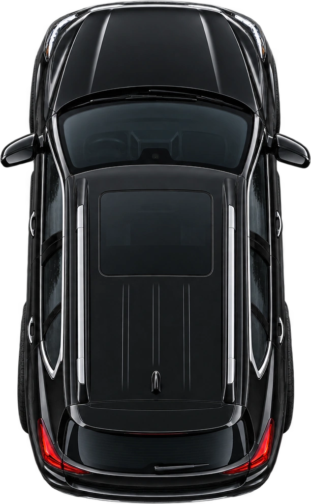
Another year nearly in the rear-view mirror. Cue the annual wrong-date season.
Take a little scroll ↘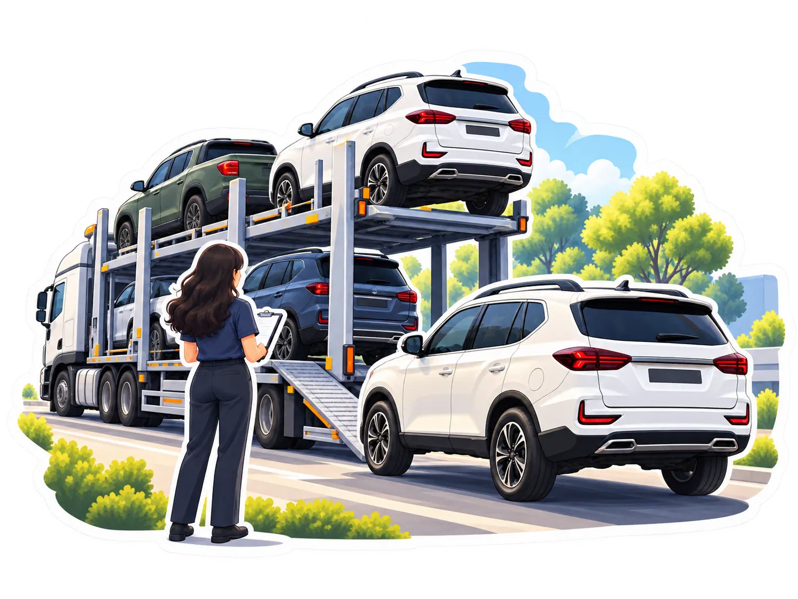
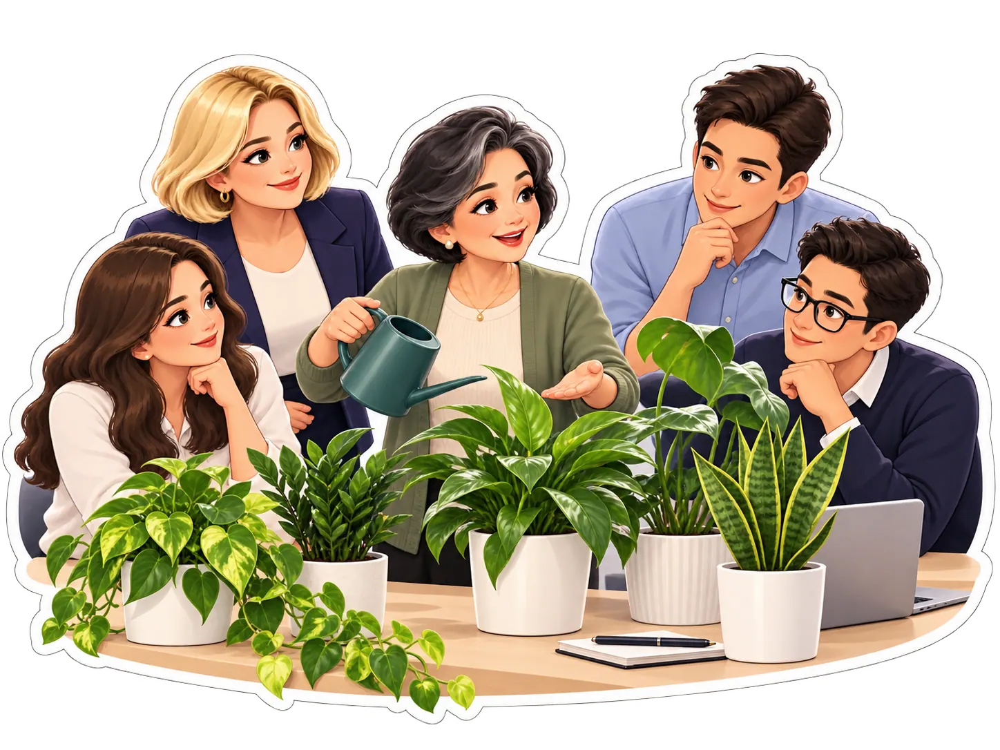
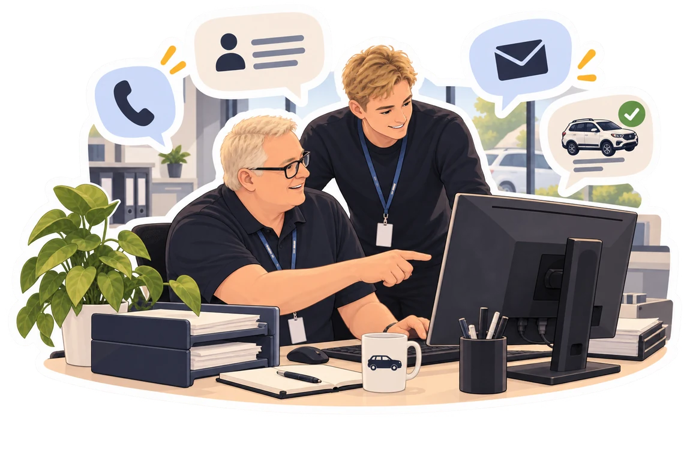
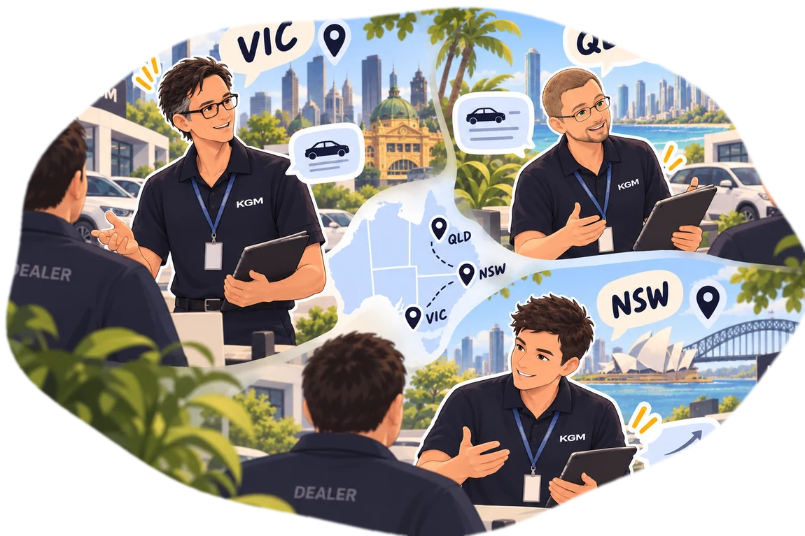
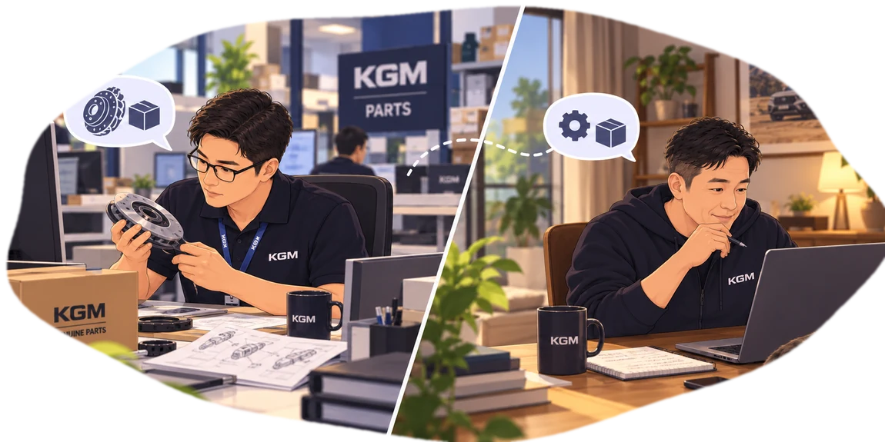
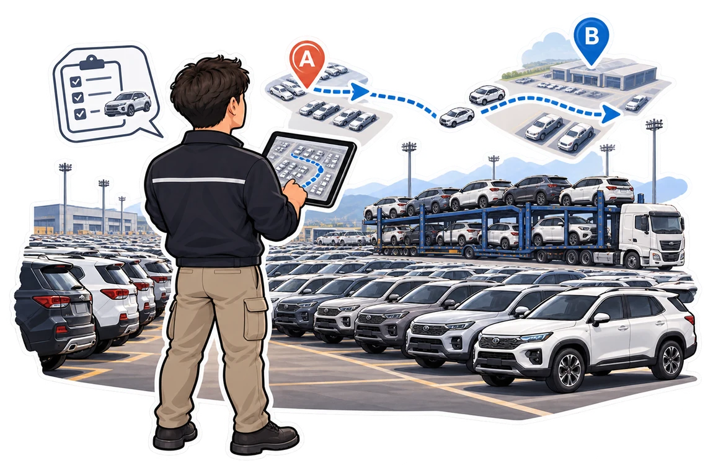
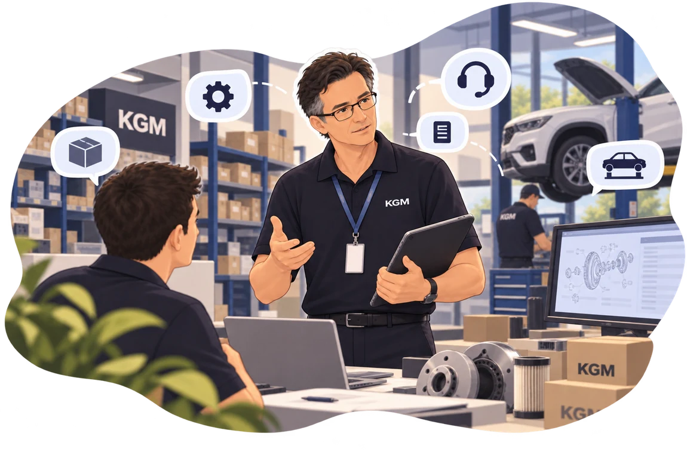
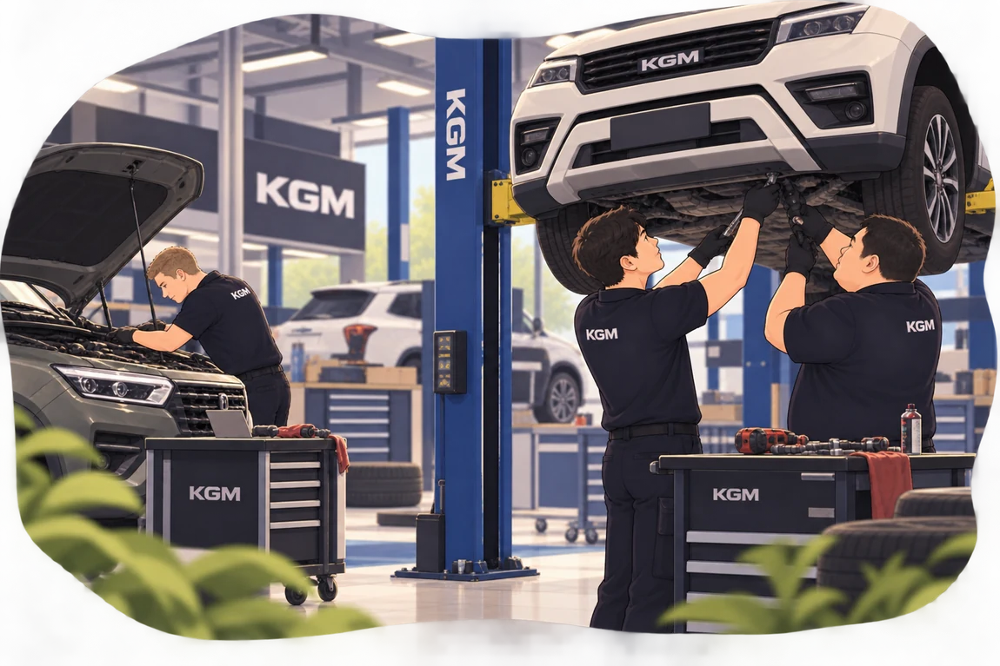
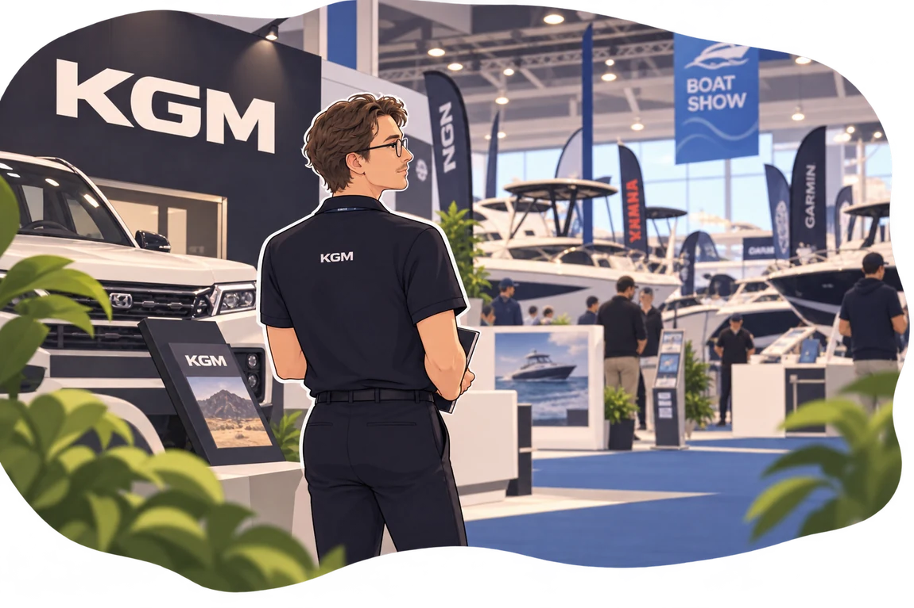
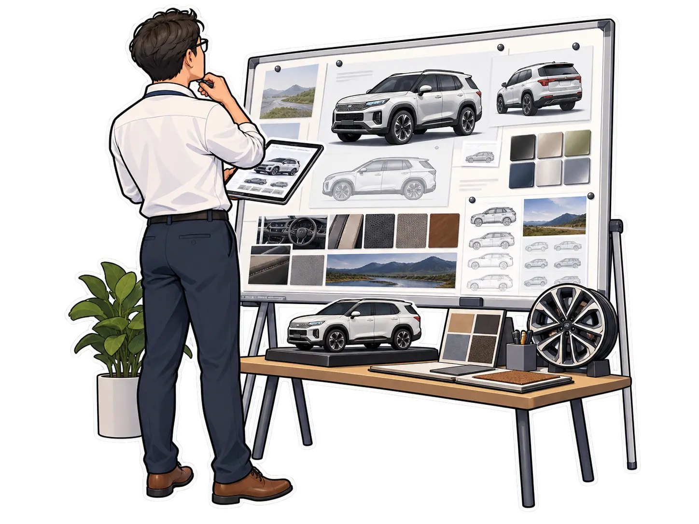
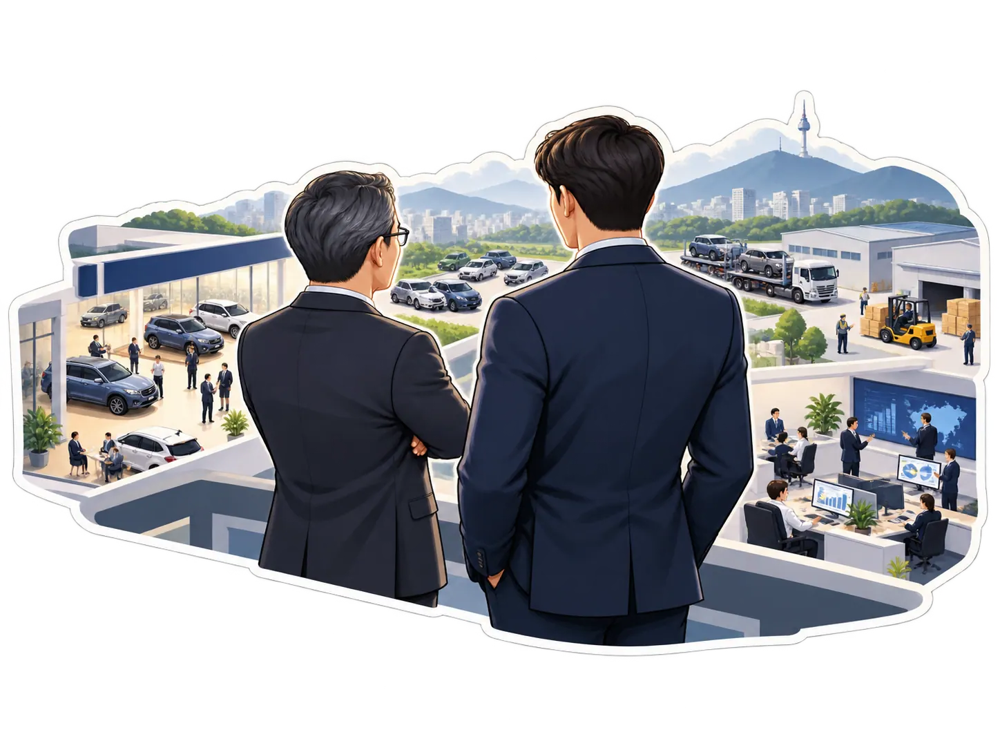
Behind every busy day, every challenge and every little win, there were people making it happen.
Even last year's Employee of the Year had somewhere else to be. Naturally, a dramatic exit was involved.
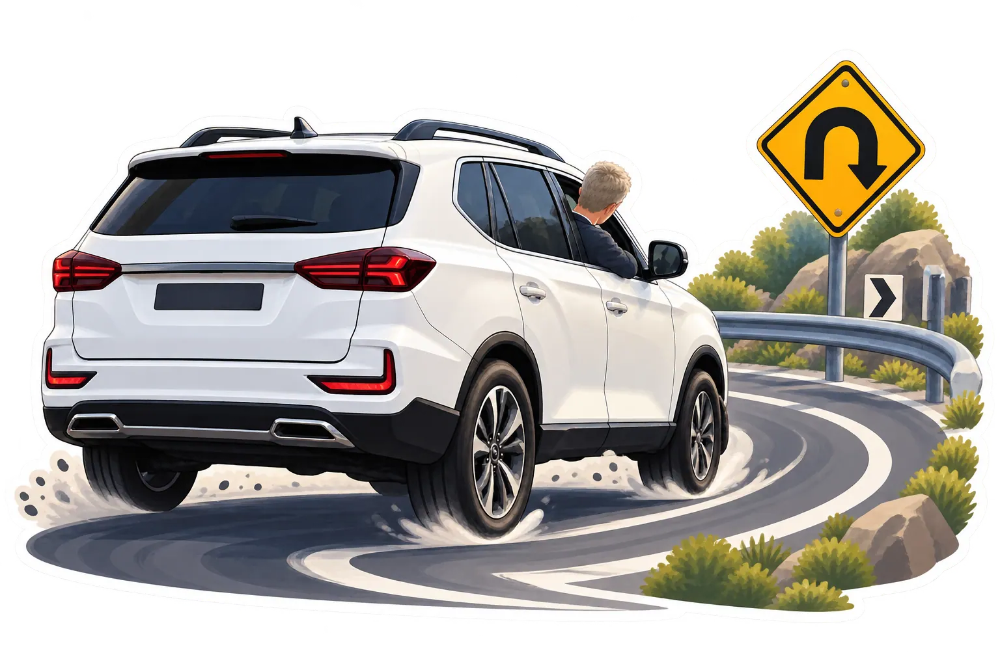
Because a good plot twist always deserves a proper road sign.
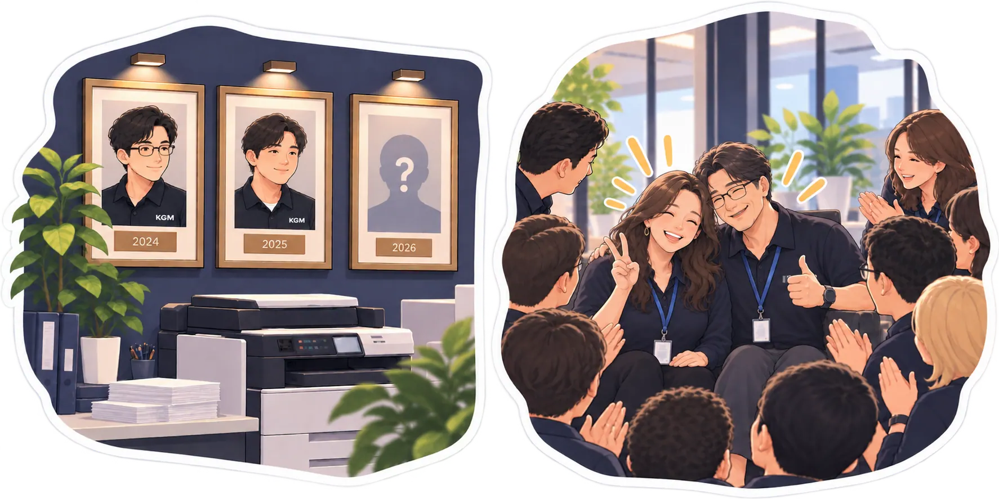
And it's almost time to add another face to the wall. But who's next?
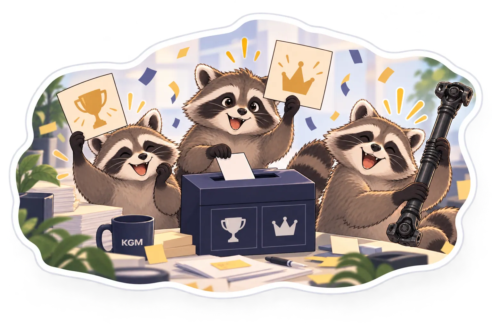
Time to give some credit where it's due.
Choose the colleagues you think deserve a little extra recognition this year. Voting is anonymous and limited to one response per person. As tradition goes, the winners will be revealed at our Christmas function.